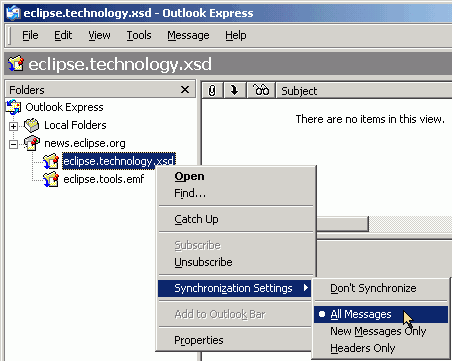
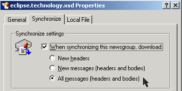
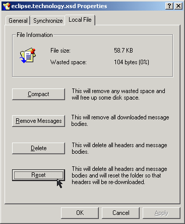
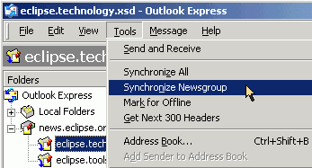
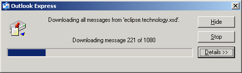
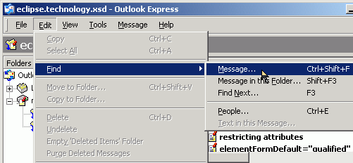
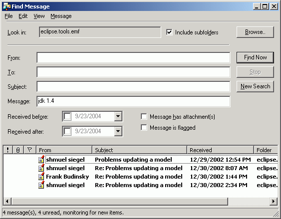

Summary
In this article you will learn how to export the contents of an Eclipse.org newsgroup for offline searching, using Outlook Express.
Last update: Sept. 23, 2004.
| Step 0: | Prerequisites |
| Step 1: | Initiate Offline Download |
| Step 2: | Searching the Downloaded Newsgroup Posts |
This walkthrough uses Outlook Express to collect newsgroup posts for offline searching.
If you do not have Outlook (or Outlook Express), you can use Mozilla Thunderbird.
Launch Outlook Express. For more details on how to set up a connection to news://news.eclipse.org, read this.
To extract the contents of your chosen newsgroup for offline reading, right-click that newgroup, and select 'Synchronization Settings >'. Ensure that 'All Messages' is selected.

Then, right-click that newgroup again, and select 'Properties'. Choose the Synchronize tab, and check the 'When synchronizing this newsgroup, download:' box, and select the 'All messages (headers and bodies)' option.

Select the 'Local File' tab, and click the 'Reset' button. Click 'Yes' when prompted. Click 'OK' to close the Properties panel.

From the 'Tools' menu, select 'Synchronize Newsgroup'.

Check the 'Get the following items:' box, and select the 'All messages' option. Click 'OK'.
Note that depending on the size of the newsgroup, this could take some time.

At the time of writing, the eclipse.tools.emf newsgroup contained over 6000 posts, which took just under 40 mins to download. The eclipse.technology.xsd newsgroup, with over 1000 posts, took about 5 minutes.
From the 'Edit' menu, select 'Find > Message...' (CTRL-SHIFT-F).

Enter your search terms:

Conclusion
In this article, we provided an overview of using Outlook Express to download the contents of an eclipse.org newsgroup for offline searching.